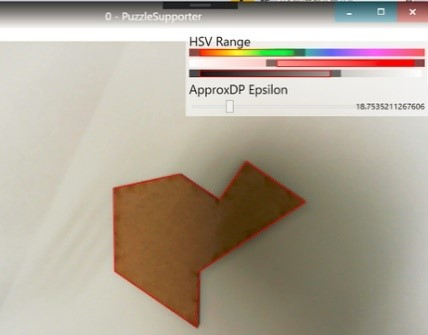

wpfでタグ付けされた作ったもの
2020-12-19
非公式高専プロコン2020 競技部門
AngryBee
csharp, wpf, win32, kosen-procon, ai
2019-10-13
高専プロコン2019 JSON解析部門
なんで勝てたか明日までに考えときます
csharp, wpf, win32, kosen-procon, ai
2018-12-04
オープンソースサロン発表
for(int i=0; i < N; ++j)
csharp, wpf, win32, talk, kosen-procon
2018-10-28
高専プロコン2018人力部門
for(int i=0; i < N; ++j)
csharp, wpf, win32, kosen-procon
2018-03-20
音楽管理・プレイヤー
Kakytubata
csharp, wpf, win32, ffmpeg, vlc, rx

2017-10-15
OSC Shimane展示
中国山地のパズドラゴン
csharp, wpf, win32, opencv, imaging, ai, talk, kosen-procon
2017-10-08
高専プロコン2017競技部門
中国山地のパズドラゴン
csharp, wpf, win32, opencv, kosen-procon
2017-03-13
コンピュータフェスティバル2017
そんなパズルは壊してしまえ
csharp, wpf, win32, opencv, imaging, ai, kosen-procon
2016-10-08
高専プロコン2016人力部門
そんなパズルは壊してしまえ
csharp, wpf, win32, opencv, imaging, ai, kosen-procon
2015-05-20
迷惑メール送信機
MailRepeatSender
csharp, wpf, win32, network
画像なし
2015-03-01
指揮者練習ソフト（未執筆）
KinectConductor
csharp, wpf, win32, kinect
2014-01-01
喋る電卓ソフト
VisualCalc
csharp, wpf, win32